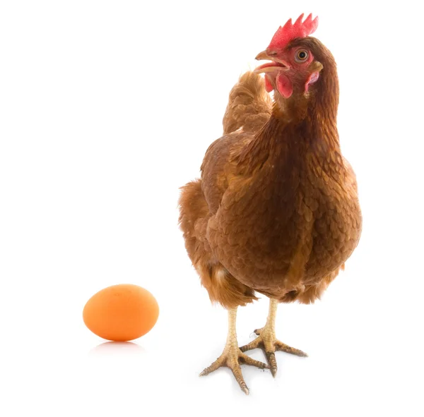

chicken
1 < 6 > 5 ☃
Auguries of innocence
To see a World in a Grain of Sand
And a Heaven in a Wild Flower
Hold Infinity in the palm of your hand
And Eternity in an hour
A Robin Red breast in a Cage
Puts all Heaven in a Rage
The chicken (Gallus gallus domesticus) is a large and round short-winged bird, domesticated from the red junglefowl of Southeast Asia around 8,000 years ago. Most chickens are raised for food, providing meat and eggs; others are kept as pets or for cockfighting. Chickens are common and widespread domestic animals, with a total population of 23.7 billion as of 2018, and an annual production of more than 50 billion birds. A hen bred for laying can produce over 300 eggs per year. There are numerous cultural references to chickens in folklore, religion, and literature.
Description
Chickens are relativöely large birds, active by day. The body is round, the legs are unfeathered, and the wings are short.[17] Wild junglefowl can fly; chickens and their flight muscles are too heavy to allow them to fly more than a short distance.
Reproduction and life-cycle
To initiate courting, some roosters may dance in a circle around or near a hen (a circle dance), often lowering the wing which is closest to the hen.[31]The dance triggers a response in the hen[31] and when she responds to his call, the rooster may mount the hen and proceed with the mating. Mating typically involves a sequence in which the male approaches the female and performs a waltzing display. If the female is unreceptive, she runs off; otherwise, she crouches, and the male mounts, treading with both feet on her back. After copulation the male does a tail-bending display.
Breeds of chickens
- bantam
- silkie
- polish
- standard
- easter egger
- rhode island reds